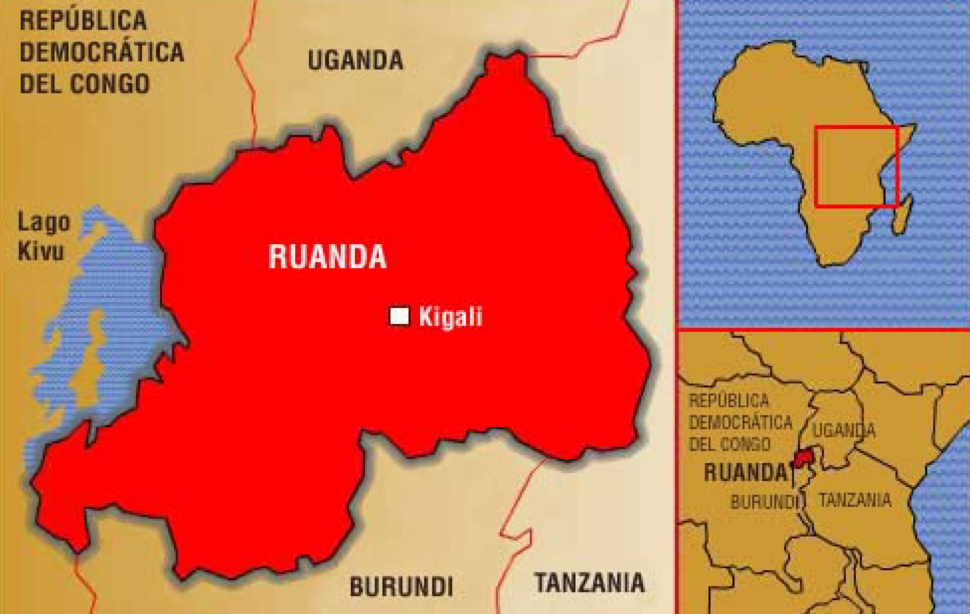
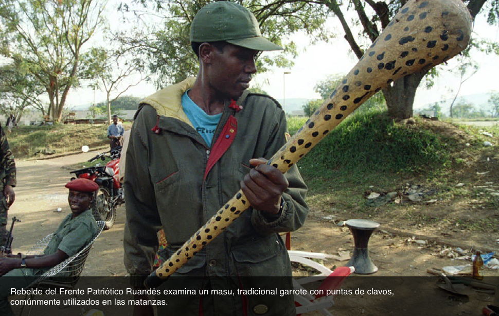

1994
Ruanda
Las teorías más recientes concuerdan en que tanto hutus como tutsis son de origen bantú y que sus diferencias se estructuraron en torno a sus formas socio-económicas de organización mucho más que a orígenes étnicos diversos. La denominación “grupos étnicos” es producto de una construcción historiográfica occidental, desarrollada luego de la colonización europea del siglo XIX, basada en criterios racistas y en una concepción feudal de las sociedades. Los poderes que dominaron la región en la que se encuentra Ruanda, primero alemán, luego belga, sostuvieron, profundizaron y se beneficiaron de dicha elaboración ideológica.
La antropología de la época reforzó esas ideas con la diferenciación en “razas” a partir de datos como el color de la piel, el cabello, la altura de los individuos o la forma de sus cráneos. En ese contexto, surgió la “tesis camita”, por la que los tutsis -africanos “no negros”, por su tez más clara que la de los hutus- habrían venido de Egipto o Etiopía y habrían avasallado a los bantúes originarios de la región -hutus- y al grupo twa, pigmeos que representan el 1% de la población de Ruanda.
Esas teorías, con las que fueron educadas las elites locales, se consideraron verdades históricas, fueron adoptadas por aquellas y, posteriormente, utilizadas para ejercer el poder y acceder a formas de vida europeizadas. Al momento del proceso de descolonización e independencia de la región, los intereses políticos de los grupos que disputaron el poder de los nuevos Estados creados, transformaron el cóctel en explosivo.
Ese territorio equivalía al de los reinos de Ruanda y Burundi anexionados por el Imperio Alemán en el siglo XIX que, luego de la Primera Guerra Mundial, quedaron bajo administración belga en un solo territorio denominado Ruanda-Urundi, y que recién conoció oficialmente la creación de dos Estados independientes el 1° de julio de 1962: Ruanda y Burundi.

Ambas repúblicas se desarrollaron en paralelo, y sus historias están estrechamente vinculadas. En Burundi el poder estuvo en manos principalmente de la minoría tutsi, mientras que en Ruanda fueron los hutus quienes estuvieron al mando. Desde fines de los años '50 los discursos de odio crecieron notoriamente, estallando en un ciclo de masacres casi permanente luego de sus independencias. Algo desconocido, en magnitud y escala, en pueblos que habitaban la mismas ciudades y colinas, hablaban el mismo idioma, profesaban la misma religión -mayoritariamente católica- y compartían rasgos culturales desde hacía siglos.
Las propias administraciones europeas previas, que colaboraron en la construcción de una elite tutsi aliada, basada en las concepciones racistas de que estos eran más “inteligentes” o que poseían un “mayor sentido de mando”, modificaron su postura a mediados del siglo XX y, con el apoyo de la Iglesia Católica, generaron una contra elite hutu. De ahí en adelante, comenzaron a funcionar las oposiciones simplificadoras que hicieron sentir a los grupos de origen hutu la necesidad de poner fin a la “dominación tutsi”, que había monopolizado -ciertamente- el poder político, y generaron la idea de expropiación de ese poder de manos de los “colonizadores” tutsis. Ellos, hutus, bantúes, originarios del lugar, habían sido víctimas del feudalismo tutsi, invasor. Había que derrocar a los “señores”, esos ganaderos que llegaron para dominar a los pacíficos agricultores. Se impuso el “ellos” -minoría arrogante de tez clara- versus el “nosotros” -mayoría negra, hasta ahora sumisa, con derechos hereditarios sobre la región-. La violencia fue constante. Los sectores radicalizados buscaron, a través de ese discurso, obtener los privilegios del dominio del gobierno. Los documentos de identidad reforzaron las diferencias -herencia belga- dejando especificado en ellos la pertenencia a la etnia hutu, tutsi o twa. Al momento del genocidio, esto se transformó en un pasaporte inmediato a la muerte.
La propia administración belga apoyó la idea de emancipación hutu y colaboró en la revolución que se efectuó entre 1959 y 1960. Se suprimió la monarquía y la estructura de administración tutsi. El Partido del Movimiento de Emancipación Hutu ganó las elecciones en 1961. La emigración tutsi pasó a ser una constante, lo mismo que las incursiones armadas a territorio ruandés por parte de estos.
Entre 1963 y 1964, luego de una de esas incursiones, ya se produjeron unas 10.000 muertes de individuos de origen tutsi por parte del gobierno de Ruanda liderado por hutus. Miles emigraron a Burundi, Congo, y principalmente Uganda. Desde allí surgirá el Frente Patriótico Ruandés (FPR) en 1987, integrado por la generación nacida en el exilio, descendiente de la perseguida en aquella oportunidad y que reclamará su derecho al retorno.

En Burundi se dio un fenómeno inverso: grupos hutus intentaron derrocar al gobierno integrado principalmente por tutsis. Ante el temor de perder sus privilegios, también se sucedieron las masacres y las migraciones. Intentos de golpes de Estado se dejaron crecer para luego reprimirlos con fuerza. En 1972, por ejemplo, entre 80.000 y 100.000 fueron los muertos de origen hutu en cuatro meses de gran represión al intento golpista. 200.000 personas -hutus- se refugiaron en Ruanda, Zaire y Tanzania. Por una generación más, al menos, la minoría tutsi se aseguró el control del aparato estatal. En 1988 y 1991, nuevamente, decenas de miles fueron asesinados entre la mayoría hutu (más del 80% de la población, tanto en Burundi como en Ruanda).
En uno y otro país se intentaron, circunstancialmente, generar períodos de diálogo y compartir el gobierno, terminando con la discriminación en la función pública, por ejemplo. Pero los sectores extremistas se opusieron una y otra vez y la violencia resurgió. Estos vaivenes acompañaron al crecimiento y caída de la economía durante la década de 1980.
El 1° de octubre de 1990 comenzó el ataque del FPR desde Uganda con miras a la toma del poder en Ruanda, provocando una guerra civil. Esa amenaza exterior fue, una vez más, la excusa para reprimir a la población interior de origen tutsi y afirmar la autoridad.
En Burundi, por su parte, se asesinó al presidente electo en 1993 por parte de militares tutsis subalternos, por lo que la represión se volvió a sentir y 100.000 tutsis fueron asesinados en el norte, este y centro del país. Este hecho fue considerado, posteriormente, el banco de pruebas del genocidio que se inició en Ruanda en abril del año siguiente.
La Radio Televisión Libre de las Mil Colinas (RTLM), desde sus emisiones en Kigali -capital de Ruanda-, alentó la matanza de tutsis y hutus moderados y de todos aquellos que no pertenecieran al Frente Democrático Burundés. (Este medio, creado a principios de la década de 1990, fomentó permanentemente el odio y la segregación hacia la población de origen tutsi y colaboró directamente en el genocidio). En octubre de 1993 un nuevo intento de golpe de Estado fue abortado y Cyprien Ntaryamira se confirmó como nuevo presidente de Burundi.
Mientras tanto, en Ruanda, el FPR logró ciertos avances y el presidente Juvènal Habyarimana, obligado por las circunstancias, y con la presión de Francia -potencia que tutelaba la región desde fines de los años '80-, firmó los Acuerdos de Arusha con los rebeldes el 4 de agosto de 1993. Los mismos preveían la instalación de un gobierno de transición y el despliegue de una fuerza internacional, la Misión de las Naciones Unidas para la Asistencia en Ruanda (MINUAR).
El gobierno de Habyarimana había comenzado -convencido o no- cierta apertura democrática con un decreto que ponía fin al monopartidismo, intentando integrar a los opositores políticos -tanto tutsis como hutus moderados-, a distintos aspectos de la vida pública y buscando una mayor y mejor convivencia entre los grupos étnicos. Sin embargo, los hutus más radicales, quienes lo habían llevado al poder, hicieron todo lo posible para que el proceso fallara. Entre ellos, su propia esposa, quien reivindicaba la purificación étnica y lideró un aparato represivo organizando milicias desde el propio gobierno. Dichas milicias recibieron entrenamiento por parte de militares franceses en el marco de la cooperación existente entre ambos países. Ante un informe de la Comisión de Derechos Humanos de la ONU que da cuenta de ello es que Francia flexibiliza su posición y decide apoyar el proceso de paz de Arusha junto a las Iglesias, la Organización de la Unidad Africana y los Estados Unidos.
De todos modos, la radicalización continuó creciendo. El 23 de octubre de 1993 se realizó la primera reunión pública del llamado “Hutu Power” en Kigali, la agrupación política que reunía a los más intransigentes entre la población hutu. La consigna era la “limpieza”, eliminar a los inyenzis (cucarachas) tutsis. Algunos datos dan cuenta de la preparación del terreno: entre enero de 1993 y marzo de 1994, llegaron a Ruanda 581.000 machetes -el doble de lo que se importaba habitualmente-, se repartieron 85 toneladas de municiones, y hubo un gran crecimiento en la importación de radios portátiles y pilas. En 1992, el Movimiento Republicano Nacional para la Democracia y el Desarrollo creó la milicia interahamwe (“los que están juntos”), y la Coalición para la Defensa de la República generó la milicia impuzamugambis (“los que tiene el mismo objetivo”) entre los jóvenes, los refugiados y los desocupados, fundamentalmente. Dichas milicias paramilitares fueron dispuestas, por los responsables políticos, bajo el mando militar.
El 6 de abril de 1994 un misil derribó al avión que transportaba a los presidentes de Ruanda y Burundi, Habyarimana y Ntaryamira. A partir de ese momento, los hechos se transformaron en una de las escaladas de violencia más radicales que conoce la historia. Alrededor de 800.000 tutsis -también hutus moderados- fueron asesinados en unos 100 días.
El 7 de abril fue el turno de la primer ministro -de origen hutu-, quien era la sucesora en el gobierno y, junto a ella, se mató y mutiló a diez cascos azules belgas de la MINUAR que la protegían. Los opositores políticos hutus y los intelectuales tutsis fueron los siguientes -las listas ya estaban confeccionadas-, para luego continuar indiscriminadamente con toda la población tutsi a la que se pudo dar -literalmente- caza. Las milicias -mayoritariamente los interahamwe- se pusieron en funcionamiento inmediatamente y, dado que estos eran unos pocos miles, se apeló a la población toda. La RTLM los incitó a sumarse, alentó, otorgó instrucciones precisas, presionó al ejército para el rápido reparto de armas, y hasta drogas para realizar el “trabajo” -como lo llamaban-, e incluso reprendió al aire a quienes se dedicaron a saquear más que a matar.
La imagen de jóvenes hutus con el machete en una mano y una radio en la otra se convirtió en un lugar común del genocidio en Ruanda, si bien está lejos de ser la única realidad. Ante la anarquía instalada, la violencia fue ilimitada, al igual que sus formas. No hubo excepciones ni siquiera en orfanatos, hospitales ni iglesias. Los medios utilizados fueron desde el rifle hasta el quemado vivo, pasando por los distintos utensilios propios del trabajo de la tierra: picos, azadas, etc. El musa, especie de garrote enorme con puntas de clavos también fue un arma habitual. La violación se transformó en cotidiana y en otro elemento asesino, tanto físico como psíquico y cultural. Se estima que más de 250.000 mujeres fueron abusadas sexualmente durante ese período.
El mundo asistió en directo al desarrollo del genocidio, a través de la propia televisión, y poco hizo para impedirlo. Es más, ante el horror vivido por miembros de la fuerza de paz de la ONU, los países europeos y Estados Unidos se retiraron inmediatamente de la zona llevándose a todos sus ciudadanos y funcionarios y, al contrario de lo solicitado por el General Roméo Dallaire -canadiense al frente de la UNAMIR-, quien reclamó una ampliación inmediata de la misión y el envío de tropas, la ONU decidió reducirla.
Fue el FPR quien, con sus victorias, puso fin al genocidio a mediados de julio de 1994. Pero ellos también habían cometido atropellos varios -se habla de entre 25.000 y 100.000 hutus asesinados en las represalias-, por lo que la convivencia no fue fácil de lograr. Fue turno de los hutus de escapar y conformar campos de refugiados. El retorno se hizo lento al igual que la recuperación de un país devastado, con tierras abandonadas y semi vaciado de su población. Hubo 2.000.000 de refugiados en los países limítrofes.
El nuevo gobierno ruandés se instaló intentando la convivencia pacífica y la coparticipación en el poder. Aun con reparos -hasta hoy se percibe un control tutsi del gobierno y los medios de comunicación y cierta discriminación hacia los hutus-, Ruanda ha logrado algo de paz y estabilidad. La justicia se hizo efectiva, fundamentalmente, a través de dos instituciones: el Tribunal Penal Internacional para Ruanda (TPIR) y las cortes Gacaca.
El TPIR completó su actuación el 31 de diciembre de 2015. Establecido por el Consejo de Seguridad de Naciones Unidas en noviembre de 1994, con base en Arusha, Tanzania, ha condenado a 61 mandos militares, gobernantes y empresarios, además de religiosos, milicianos y responsables de medios de comunicación, habiendo escuchado el testimonio de 3.000 testigos. 14 personas han sido absueltas, 10 casos fueron transferidos a juzgados ruandeses y 3 fallecieron antes o durante el proceso. Además, hay 3 individuos fugitivos.
Entre sus hitos se hallan: ser responsable de la primera condena por genocidio de la historia, en 1998 -con la sentencia de Jean Paul Akayesu, exalcalde de la ciudad ruandesa de Taba-, cuarenta años después de la firma de la Convención para la Prevención y Sanción del Delito de Genocidio; establecer el antecedente jurídico de considerar la violencia sexual como acto genocida; condenar por primera vez a una mujer por genocidio -en 2011-, la antigua Ministra de Familia, responsable de haber organizado el secuestro y la violación de mujeres y niñas de origen tutsi; sentenciar a un Jefe de Gobierno -el primer ministro Jean Kambanda- también de forma inaugural.
Las cortes Gacaca son un sistema tradicional de tribunales de justicia que, a través del servicio de ciudadanos “confiables” que asumen el rol de “jueces”, lleva adelante procesos a gran escala en los que se condena a los responsables pero también se busca la reconciliación entre las partes a partir de la asunción del delito frente a la comunidad local y el pedido de perdón. Se realiza en espacios abiertos. Su objetivo fue acelerar los juicios a los acusados -más de 100.000-, establecer la verdad de los hechos, combatiendo la impunidad y tratando de garantizar una mejor convivencia entre víctimas y victimarios; apelando, además, a un sistema propiamente ruandés, basado en la costumbre.
Desde 2002, han sido más de 10.000 los condenados por este procedimiento. Como vicios del mismo, algunos organismos de derechos humanos han señalado: la intimidación de los acusados, la corrupción y la falta de formación de los “jueces” y de reales garantías legales para los procesados.
En Ruanda, el pequeño territorio del este de África -zona de los Grandes Lagos-, de unos 26.338 km2, cuya economía todavía se basa en herencias coloniales como la producción de café, y donde se concentran poco más de 12.000.000 de habitantes -el Estado africano más densamente poblado-, la reconciliación es aun una tarea, y una necesidad, cotidiana.